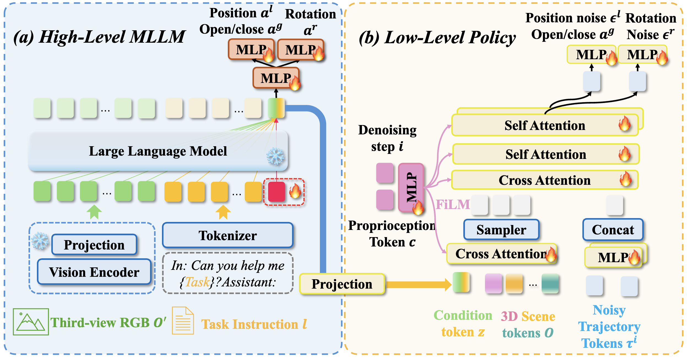

Can Cui, Pengxiang Ding*, Wenxuan Song, Shuanghao Bai, Xinyang Tong, Zirui Ge, Runze Suo
Wanqi Zhou, Yang Liu, Bofang Jia, Han Zhao, Siteng Huang, Donglin Wang†
Westlake University, Zhejiang University, Xi'an Jiaotong University, HKUST(GZ)
*Project lead | †Corresponding author
Under Review
Dual-system VLA (Vision-Language-Action) architectures have become a hot topic in embodied intelligence research, but there is a lack of sufficient open-source work for further performance analysis and optimization. To address this problem, this paper will summarize and compare the structural designs of existing dual-system architectures, and conduct systematic empirical evaluations on the core design elements of existing dual-system architectures. Ultimately, it will provide a low-cost open-source model for further exploration. Of course, this project will continue to update with more experimental conclusions and open-source models with improved performance for everyone to choose from.
Dual-system VLA (Vision-Language-Action) architectures have become a hot topic in embodied intelligence research, but there is a lack of sufficient open-source work for further performance analysis and optimization. To address this problem, this paper will summarize and compare the structural designs of existing dual-system architectures, and conduct systematic empirical evaluations on the core design elements of existing dual-system architectures. Ultimately, it will provide a low-cost open-source model for further exploration. Of course, this project will continue to update with more experimental conclusions and open-source models with improved performance for everyone to choose from.
The results show that the current MLLM is insensitive to environmental changes, which is unexpected. Analysis of action token embeddings reveals that they mainly reflect instruction semantics, with little adaptation to visual input. For example, “right” consistently has a higher similarity than “left,” regardless of actual motion. This suggests the MLLM does not effectively leverage visual reasoning and instead passes static instruction semantics to the policy. Thus, current dual-system designs are flawed, as the MLLM’s visual guidance is not meaningfully transferred to the action policy—raising the question of whether a single LLM could achieve similar performance.
OpenHelix bridges the high-level MLLM and the low-level policy using a learned

OpenHelix bridges the high-level MLLM and the low-level policy using a learned
Website template borrowed from Jon Barron.